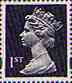
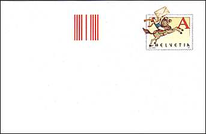
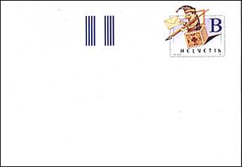

|
Stamps That Lost Their FaceReady-to-post envelopes |
 |
The Swiss post will issue on 11/21/2000 a set of two so
called Ready-to-Post envelopes. The given reason is that "market
research conducted in November 1998 among 500 German- and French-speaking Swiss
and 200 customers with philatelic standing orders revealed a high level of
acceptance for such envelopes." One can wonder why the Italian-speaking
Swiss weren't consulted and also why should the philatelists decide on something
that has so little to do with philately. The real reason for issuing these
covers is that they open the road for stamps without face value (or with
"permanent validity"), like those
already issued by many postal administration worldwide.
We can read further in the "FOCUS on Stamps", Swiss
Post, 5/2000, p. 22: "... And of course, it goes without saying that
these prepaid envelopes - like all stamps - are permanently
valid... Another plus is that these envelopes are sold
at the current face value of the stamps, with no surcharge for the
envelope - a conscious decision by Swiss Post. A new feature is that the covers
will have no value printed on them."
 |
 |
The "A" covers shown above are for
priority letters (costing today CHF 0.90) and the "B" covers for
non-priority ones (CHF 0.70). They were designed by Mario Grassi from Binningen.
I wonder what have to say the producers of envelopes,
who have got here a competitor they cannot practically fight, because they
cannot enter the postal market, due to the monopolistic position of the Swiss
post in what concerns the issuing of postal stamps. My supposition is that they
can say nothing at all. It is also interesting to read that "these
prepaid envelopes - like all stamps - are permanently valid". Actually
only the Swiss stamps printed after 1960 are still valid, therefore there are no
reasons to think that these one will stay valid forever. As for some definitions
and some problems
related to the stamps without a face value (SWF), you are invited to read my article
dedicated to them.